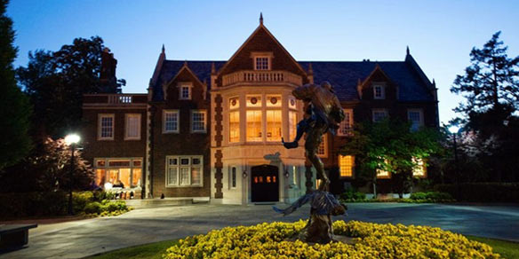
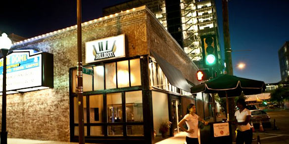

Ceremony:
Harwelden Mansion - 1920s Mansion that now houses the Arts and Humanities Council of Tulsa
Saturday, October 13th 2012 - 5:00 p.m.
2210 South Main Street Tulsa, Oklahoma 74114
Saturday, October 13th 2012 - 5:00 p.m.
2210 South Main Street Tulsa, Oklahoma 74114

Reception:
IDL Ballroom - Classic venue that captures our love of downtown
230 East 1st Street Tulsa, Oklahoma 74103
230 East 1st Street Tulsa, Oklahoma 74103

Maxx Crawford Designs | © 2012